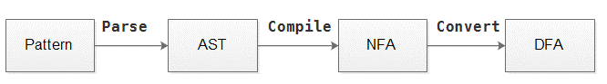
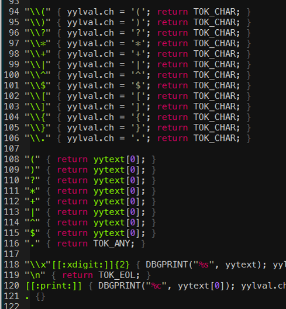
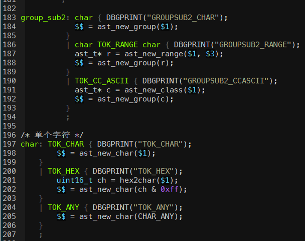
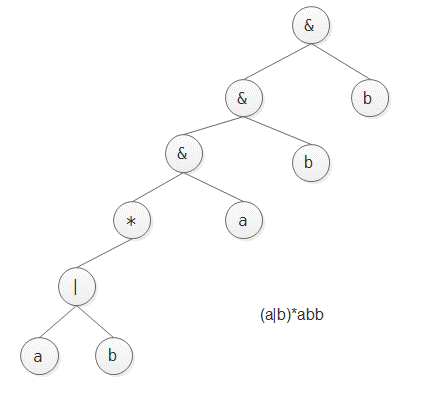
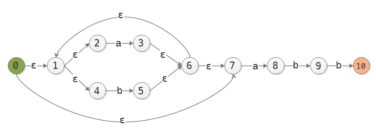
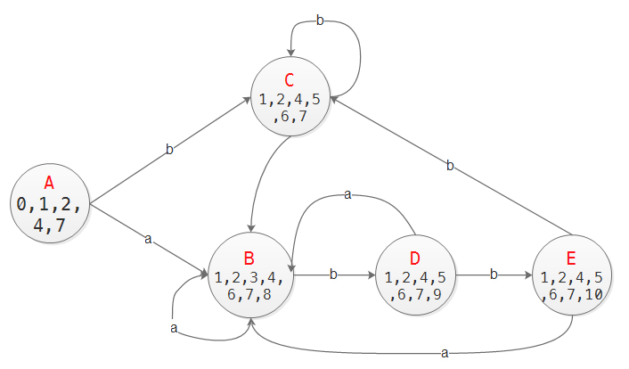
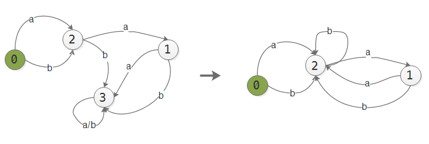

正则表达式¶
1. 概述¶
正则表达式在现实中有着极为重要的作用, 很多软件使用了正则表达式, 很多语言也提供了正则表达式支持, 虽然其内部实现方式各有不同.
本文不打算讨论PCRE和re等通用正则引擎, 而是尝试从原理到实现来讨论一种和 hyperscan 功能相似的多模正则引擎zre.
本文内容涉及到了词法和语法分析, 有限状态机等知识, 可以参考《编译原理》.
正则引擎的工作流程主要分为:
- 解析. 将正则表达式转换为抽象语法树(AST)
- 编译. 将AST编译为非确定性有限自动机(NFA)
- 转换. 将NFA转换为确定性有限自动机(DFA)
- 匹配. 将数据依次送入NFA/DFA, 给出匹配结果
其中前3步如下图所示:
2. 解析(parse)¶
解析使用词法(lexical)分析器和语法(grammar)分析器完成, 其中词法分析器主要解析正则元字符, 语法分析器解析正则语法. 解析完成后, 在内存中生成抽象语法树.
zre使用flex和bison来完成词法和语法分析工作.
2.1 词法¶
编写词法分析文件, 分析正则元字符,字符组等. flex会根据此文件生成相应的C代码, 最终和其他代码一起编译.
2.2 语法¶
编写语法分析文件, 在上一步词法分析器生成的记号(token)流, 根据正则语法生成AST. bison会根据此文件生成相应的C代码, 最终和其他代码一起编译.
2.3 抽象语法树¶
经过前两步解析后, 每个正则表达式都生成一棵AST, 将此AST转换成NFA, 即可用于匹配. 将多个正则表达式生成的AST进行适当的合并, 再转换成NFA, 则可以用于多模匹配.
zre目前的AST类型包括:
- 普通字符树 ast_char_t
- 字符范围树 ast_range_t
- POSIX/PERL字符组树 ast_class_t
- 重复树 ast_repeat_t
- 字符分组树 ast_group_t
- 锚点树 ast_anchor_t
- 泛型树 ast_t
构造AST时, 还需要进行某些处理, 比如
- 将ast_class_t转换为ast_group_t
- 简化某些重复树 某些重复树是无法直接编译的, 比如子表达式a{m, n}生成的重复树, 需要简化成仅含*, +, ? 这3个重复量词的树, 比如a{1, 3}需要转换成a(aa?)?
这里给一个例子, 正则表达式 (a|b)*abb 生成的AST如下图所示:
3. 编译(compile)¶
3.1 构造NFA¶
AST构造并简化之后, 就可以编译为NFA了. 有以下要点:
- 对AST使用后序遍历算法(先左子树,再右子树,最后父节点)
- 使用一个辅助栈, 里面存放子NFA;每个子NFA有一个入状态和一个出状态
- 将子树编译成子NFA, 入栈; 遇到操作符(与或之类), 将子NFA出栈, 进行运算后入栈
- 到最后栈中必仅剩一个子NFA, 这就是最终的NFA
- 每个正则表达式编译成一个NFA, 并对其对应的id挂在最终NFA的匹配列表上
- 构造时e?, e*的NFA时, 弹出的子NFA的每一个节点都需要与新NFA的出状态有一个ε连接
- 进行多模编译时, 依次编译每个模式, 并将它的NFA与上一个模式生成的NFA合并(merge)
3.2 NFA转DFA¶
使用”子集构造法”, 此算法需要以下3个针对NFA的操作例程:
| 操作 | 描述 |
|---|---|
| ε-closure(s) | 求从状态s开始只通过ε转换即可到达的状态集合 |
| ε-closure(T) | 求可以从T中某个状态s开始, 只通过ε转换即可到达的状态集合 |
| move(T, a) | 求从T中某个状态s出发通过标号为a的转换到达的状态的集合 |
其中s是NFA状态, T是NFA状态集合, a是输入条件. 可见DFA中每个状态实际是原NFA状态的”集合”.
子集构造法:
实例: 模式 (a|b)*abb 的NFA转DFA. 设可能输入为{a, b}. DFA状态用大写字母表示.
构造好的NFA:
转换步骤:
起始状态为0, 令A=ε-closure(0) = {0, 1, 2, 4, 7}, 注意也包含它自身
计算DFA[A,a] = ε-closure(move(A,a)) = ε-closure(3, 8) = {1,2,3,4,6,7,8}, 记为B; 同理, DFA[A,b] = {1,2,4,5,6,7}, 记为C
对B,C继续以上过程, 最终会构造完整的DFA, 见下图

3.4 消除死状态¶
当NFA转换成DFA后, DFA中可能存在”死状态”, 即进入这个状态后, 无论输入条件是什么, 都无法转换到其他状态. 这种状态会导致匹配时, 状态机陷入这一状态, 无法根据后续数据正确进行匹配.
若DFA[s,a]=n,n为死状态, 则计算DFA[0, a] = n2, 如果n2!=n, 则DFA[s,a] = n2;否则DFA[s,a] = 0.
3.5 DFA最小化¶
上文中构造的DFA可以经过DFA最小化算法, 将不必要的状态去除. 算法由于时间关系暂略, 以后有空会补上.
3.6 DFA序列化¶
对DFA进行最小化, 生成DFAMin后, 可以将内存中的DFAMin进行序列化, 方便导出到文件中, 以后使用时导入即可, 不需要从头编译. 毕竟编译大量的正则表达式会消耗大量时间.
这一步比较简单, 主要是去掉DFAMin中所有指针相关的数据结构, 转换成”偏移+数组”这种”平面化(flat)”的形式.
当然这一步也可以在DFA最小化时一起完成. 在这里我把序列化后的DFAMin称为database.
4. 匹配(match)¶
匹配可以在NFA, DFA, DFAMin或者database上进行. 由于ZRE最终构造成database, 所以仅在database上进行匹配. 前3者仅用于调试bug.
使用正则表达式编译而成的状态机进行模式匹配, 与使用普通字符串经AC算法编译而成的状态机相比, 并没有什么不同. 除了为兼容Hyperscan, 命中模式时报告的位置是命中位置的第一位置. 比如特征串 bcd 命中了 abcdefg , 而报告的位置是e的位置,而不是d.
参考¶
- <<精通正则表达式>> 第3版
- <<flex与bison>>
- <<编译原理>> 第2版, 第3章
- Regular Expression Matching Can Be Simple And Fast
- C++正则表达式引擎设计与实现(core)